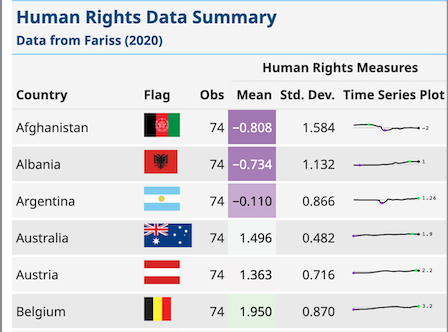

obertwwalker.github.io
Home
About
Where
Links
obertwwalker.github.io
A link to
obert’s academic website
Pigeons and Palettes
obertwwalker.github.io

Human Rights Protections–Tables
obertwwalker.github.io
geoFacets of Credit Quality
obertwwalker.github.io
No matching items